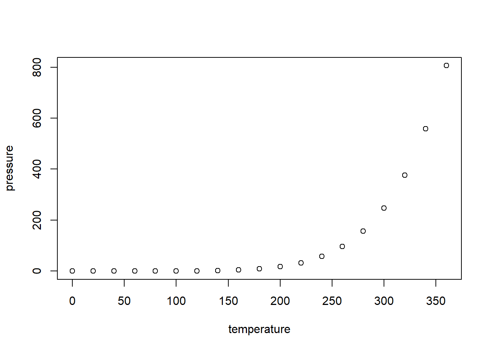

2 R Markdown
2.1 Why Use R Markdown
Imagine you are in this scenario: you have a homework assignment where you are supposed to produce data visualizations and answer some questions based on a data set using R. Your teacher needs to assess if you know what code to write and that you are providing your narrative on the R output. Therefore, you need to produce a document that show the following:
- R code.
- Relevant graphs.
- Your interpretations of the graphs in narrative form.
These have to be presented in a cohesive and organized manner.
Providing an R script will not help, as it only shows your R code and you could provide your narrative as comments. However, your graphs are not shown. Your teacher does not want to produce the graphs by running your R code as it will take a lot of time to run code for all students in the class.
You might think of copying and pasting your R code, your graphs from the output, and type you narrative into a word document. This is doable but it will take you more time than you think, and the document is likely to look sloppy.
Is there a tool that will help you weave your code, R output, and your narrative into a neat document? This is what R Markdown does!
Note: R Markdown is not the only tool that allows you to do this. Quarto is another tool. R Markdown and Quarto can be thought of as variants of Markdown. Markdown is a language for formatting plain text. R Markdown and Quarto expand on Markdown.
2.1.1 Reproducible Research
Another reason for using R Markdown is to adhere to reproducible research principles. According to Claerbout and Karrenbach (1992), the definition of reproducible research is “Authors provide all the necessary data and the computer codes to run the analysis again, re-creating the results.”
Since your document provides the R commands, readers can simply execute the commands to verify your output. Reproducible research improves transparency and builds trust in your work.
Note: The Turing Way provides an overview of the terms reproducible, replicable, robust, and generalizable for research. We will not go into the details for this class but it is worth your time to think about these.
2.2 Getting Started
To get started with producing your document with R Markdown, open RStudio, then click on File, New File, R Markdown. Select the Document option, and fill in the entries for title, author, and date. For the time being, use HTML as the default output format.
You will see an untitled tab created. Save it. The file will have a .Rmd extension, which is the extension for an R Markdown file. There are some directions provided in this file. Feel free to read it.
In general, there are three essential components of an .Rmd file:
- YAML header.
- Narrative text.
- Code chunks.
2.2.1 YAML Header
The YAML header controls the settings associated with the document. At this point, your YAML header looks like this:
The YAML header is fenced by three dashes, ---. These three dashes are also called a delimiter. A delimiter is a specific character or symbol used to indicate the boundary between separate, independent regions of the file. You can easily change the title, name, and date by changing the values inside the quotes in the YAML.
2.2.2 Narrative Text
You can type your narration below the YAML.
2.2.2.1 Section Headers
Use hashtags # followed by a space to create a section header. The more hashtags the smaller the header.
2.2.2.2 Text Styles
- For italics, fence the word(s) with
*. - For bold, fence the word(s) with
**. - To display short code in a text, fence the code with ```.
2.2.2.3 Hyperlinks
For hyperlinks, fence the text with [ ] then add the URL in parentheses. For example:
2.2.2.4 Lists
For an unordered bullet point list, start each line with a dash -, asterisk *, or plus + followed by a space.
For a numbered list, start each line with a number followed by a period and a space.
For a nested list, indent the line with two or four spaces (or one tab) and use the list marker.
2.2.3 Code Chunks
Code chunks allow you to embed R code within your document. There are a few ways to insert a code chunk:
- Ctrl + Alt + I
- Click the insert code chunk icon (its a green square with a white C). Click on the down arrow and select R.
- Type the chunk delimiters
```{r}and```.
You can type in your R commands inside the code chunks.
2.2.3.1 Chunk options
You can customize how the code runs and displays by using chunk options inside the curly braces. There a lot of options; the ones you may use are:
-
message = FALSE: which hides messages or warnings that R produces from your document. -
echo = FALSE: which hides the code, but allows the results from R to be displayed in your document. This should be used if readers do not want the R code. -
eval = FALSE: which shows the code but does not execute the code in your document. This is used for displaying example R code. (I use it a lot in these notes)
2.2.3.2 Inline Code
To display the result from R directly inside the narrative text, use inline R code by fencing the R code with single backticks starting with the letter r, for example:
You may want to consider using the round() function as R tends to print out a lot of decimal places
2.3 Cross-Referencing with R Markdown
Cross-referencing is done in a document to help connect related information to readers. You will often that you will want to connect a narrative with a graphical output, information presented in a table, a math equation, or a citation. R Markdown does cross-referencing and automatically numbers them for you. Below, we will go over a simple example of how to label a figure produced by R, and then refer to it in a narrative.
For this example, we will use the pressure data set that is loaded in base R. Per its documentation, the data are the temperature in degrees Celsius and vapor pressure of mercury in millimeters (of mercury).
In the code chunk below, notice a couple of items are added inside the curly braces:
- A label,
plot-pressurefor this example. - A caption via
fig.cap.
```{r plot-pressure, fig.cap="Vapor Pressure of Mercury in mm Hg Against Temp in Celcius"}
plot(pressure) # a scatterplot
```
Figure 2.1: Vapor Pressure of Mercury in mm Hg Against Temp in Celcius
An example narrative about this plot could be: we can see from Figure 2.1 that vapor pressure increases exponentially with temperature.
To cite the figure, type \@ref(fig:plot-pressure) in the narrative, using the label in the code chunk.
This is just a simple example. Referencing tables and equations are similar. Details can be found in Xie, Dervieux, and Riederer (2020) Chapter 4.7.
Note: you will learn more about creating plots in a later unit.
2.4 Knitting Your Document
Once you have your document ready, you can knit your document. Knitting transforms your plain text .Rmd file into a neat document. Click on the Knit button, and your document is produced in the output format chosen at the beginning. This knit button also installs the rmarkdown package (if needed) and loads it. This is why you do not have to load it by using the library() function.
2.5 Things to Consider
2.5.1 R Script or R Markdown
You might be wondering when should you use an R script and when you should use R Markdown. Personally:
- If I am not going to be sharing the work, or only sharing the work with a small group of collaborators, I am likely to only use an R script.
- If I want to share my work broadly, then I will use an R Markdown. I also start the analysis in an R script, and then transfer the code to an R Markdown, as I find this makes troubleshooting easier.
2.5.2 Troubleshooting
I have seen some students work directly using an .Rmd file and bypass an R script. I find troubleshooting error messages difficult in this scenario, as there are two potential sources of the error:
- Error in R code inside code chunks.
- Error in delimiters or options for the YAML, code chunks, inline code.
Personally, I type up and execute my R code in an R script first. Once there are no more errors, I then create my .Rmd file and then copy and paste the relevant R code into the code chunks. If an error pops up when knitting, I can rule out errors in the R code and focus on the delimeters and options for the YAML and code chunks.
2.5.3 PDF Output
You will need to produce a PDF file for the project. To do so, you can:
- Change the default output format to PDF when creating the
.Rmdfile at the beginning.
- To knit the file into a PDF, you need LaTeX, which can be installed by running the following two commands in the R Console:
install.packages("tinytex")
tinytex::install_tinytex()- If this previous step does not work, change the default output format to word when creating the
.Rmdfile at the beginning. Then, convert the word document to a PDF using microsoft word.